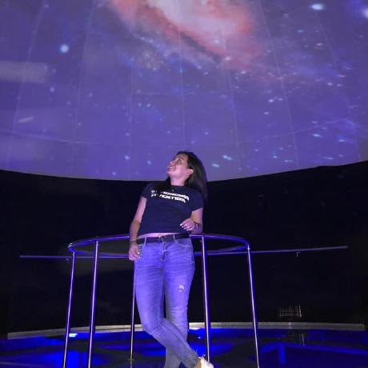

Soy Ilse Aguilar, me gusta la programación y la astronomía.
La astronomía es una ciencia muy importante que estudia el origen del universo, es decir, el origen de la vida que conocemos, no solo investiga nuestra galaxia. Elaboró teorías que permiten comprender el posible origen del planeta y del cosmos.
Existen entidades estatales de gran prestigio en todo el mundo que se dedican la investigación y experimentación, como la NASA (de su sigla en inglés National Aeronautics and Sapce Administration) que investiga, realiza misiones espaciales y provee de valiosa información a los científicos de todo el mundo.
Debido a la astronomía y su actividad a lo largo de la historia, podemos comprender la existencia y el funcionamiento de nuestro sistema solar. Incuso, ha hecho posible que el ser humano viajara a la luna para realizar estudios y expediciones de investigación.

Este es mi perfil de GitHub